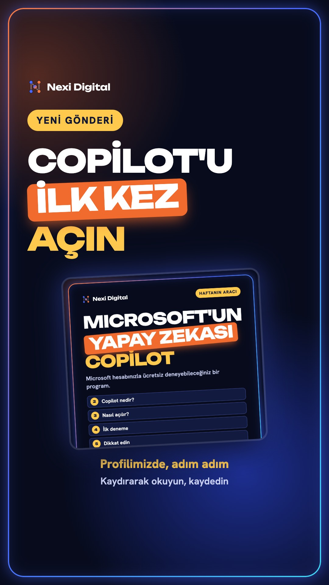
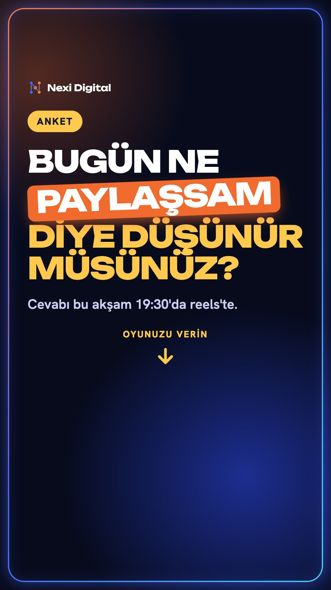
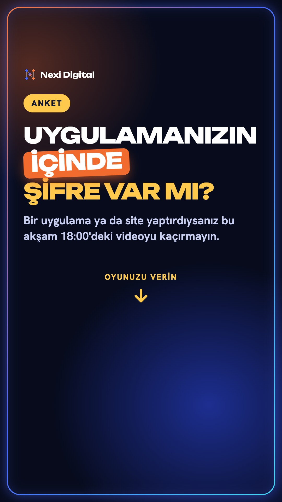
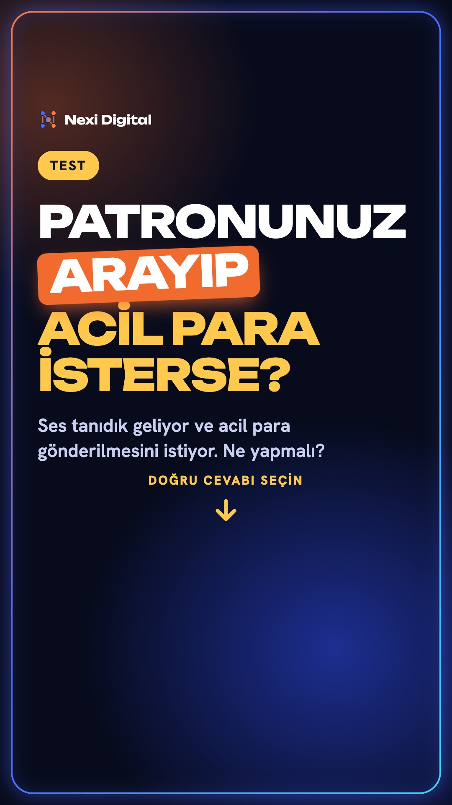
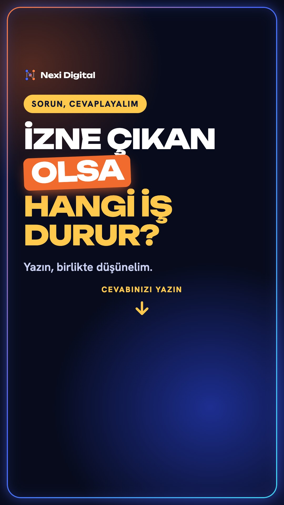

Telefonda: görsele basılı tut, "Fotoğraflara Ekle" de. Ya da "İndir" düğmesine dokun.

Bağlantı çıkartması ekle ya da Copilot gönderisini uçak simgesinden "Hikayene ekle".
İndir
Okun altına ANKET: "Her hafta" / "Bazen". 19:30'da reels'i de hikayene ekle.
İndir
Okun altına ANKET: "Bilmiyorum" / "Kontrol ettirdim".
İndir
Okun altına TEST: A) Hemen gönder, B) Kapat, bildiğin numaradan geri ara. Doğru: B.
İndir
Okun altına SORU KUTUSU: "Hangi iş durur?" Gelen cevapları bana ilet.
İndir